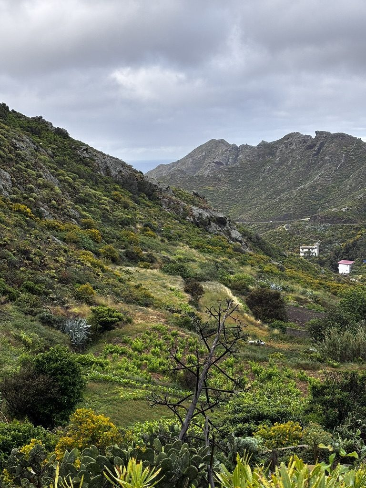
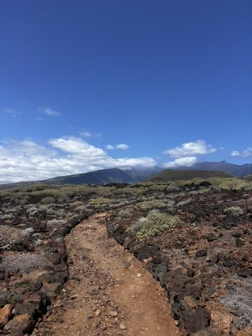
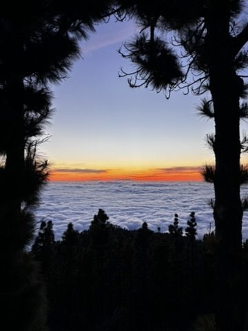
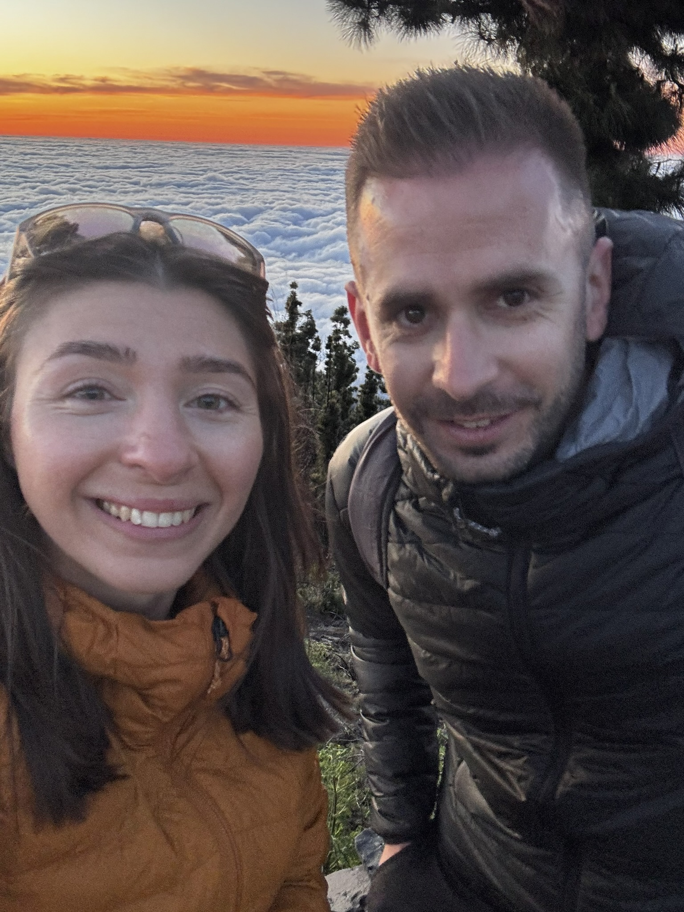
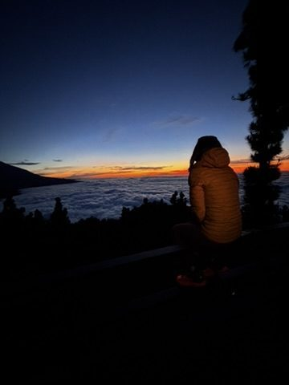

Most people who come to Tenerife to hike come for El Teide. That's fair — it's the highest peak in Spain and the view from the summit is extraordinary. But if El Teide is the one thing you do, you're missing most of the island. Tenerife is geologically and climatically strange enough to hold four completely different landscapes within a two-hour drive of each other. You can hike through a desert in the morning and a cloud forest in the afternoon. I did this several times. I still didn't run out of trails.
The green north
The north of Tenerife is where the trade winds deliver most of the island's rain. The result is a lush, dense, dramatically green landscape that looks nothing like the volcanic island people expect. The trails here wind through laurel forests, past banana and grape plantations, along ridgelines where the clouds sit so low you walk through them. The light is soft and filtered. The views when they open up are between layers of green and grey.

The green of Tenerife. This is not what people expect when they book a Canary Island trip. This is what they remember.
I spent two days hiking in the north and barely scratched it. The trail network is extensive and not always well-signposted, which means you end up somewhere unexpected fairly often. This is not always a problem. Some of the best views I found on this island were on paths I hadn't planned to be on.
The cliffs
The western coast of Tenerife has cliffs. This is not a strong enough sentence for what is actually there — the cliffs here are the edge of an ancient volcanic eruption, dropping hundreds of metres to the Atlantic, with nothing gradual or gentle about the transition. You stand at the top and the air comes off the ocean with real force and the scale of what you're looking at takes a moment to resolve into something the brain can process as real.

The cliffs. Photographs reduce them. You need the wind and the noise of the sea below to understand what you're looking at.
The arid south
The south is the Tenerife that gets photographed for travel brochures — sun, dry air, the roads cutting through terrain that looks more like the American Southwest than a Spanish island. The hiking here is different: exposed, open, the colours ochre and brown and a grey-green from the succulents that manage to grow in the volcanic soil. It is not the most dramatic landscape on the island but it has a clarity to it, a directness. There is nowhere to hide from the light and no reason to.

The south. Dry, open, honest. A different island from the one an hour north.
Above the clouds
The cloud layer in Tenerife sits at roughly 800–1200 metres. Below it: green and grey and rain. Above it: blue sky and the tops of the clouds spread out below you like a second landscape. This transition — the moment the trail comes out above the cloud — is one of the better things available to a person with legs and a few hours. It happens suddenly. One moment you're in mist, the next you're in full sun with a sea of white below you.

Above the clouds. The cloud layer is below you. The island is under there somewhere. The sun is completely uninterrupted up here.
The people you end up hiking with
Tenerife attracts a specific kind of traveller — people who came for the weather and discovered the trails, or people who came for the trails and discovered everything else. The hiking paths have a social quality that not all mountains do. You catch up with people, you fall behind, you share a viewpoint for twenty minutes with someone who started the same trail from the other end.
I ended up hiking with a French traveller for two days after we crossed the same ridge in opposite directions and established that we had complementary map-reading skills. By the end we had covered more ground than either of us had planned and chased enough sunsets to develop strong opinions on which spots were worth the detour.

Travel buddies made on a ridge. We covered a lot of ground. We chased a lot of sunsets. No complaints.
The ending of a day in the mountains
There is a specific quality of tired that comes from a full day of hiking in a landscape that keeps surprising you. Not the exhausted kind — the satisfied kind, where you sit at a viewpoint at the end of the afternoon and the light goes gold and you don't feel the need to do anything except be there. Tenerife gives you this regularly if you put in the hours. The trails are long enough to earn it. The sunsets are good enough to deserve the effort.

End of the day. The light goes soft. Everything that needed thinking through has been thought through. Grateful.
I left Tenerife with a list of trails I hadn't done yet. This is the correct outcome. An island that runs out before you do isn't worth going back to. Tenerife is worth going back to.